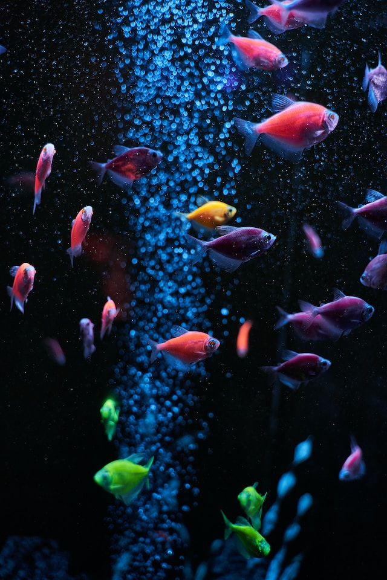

PEIXES
Peixes ou Piscis é o décimo segundo, e último signo astrológico do zodíaco, situado entre Aquário e Áries e associado à constelação de Pisces. Seu símbolo são dois peixes. Forma com Câncer e Escorpião a triplicidade dos signos da Água. É também um dos quatro signos mutáveis, juntamente com Gêmeos, Virgem e Sagitário.
Os peixes são animais vertebrados, aquáticos, tipicamente ectotérmicos, que possuem o corpo fusiforme, os membros transformados em barbatanas ou nadadeiras (ausentes em alguns grupos) sustentadas por raios ósseos ou cartilaginosos, guelras ou brânquias com que respiram o oxigénio dissolvido na água (embora os dipnóicos usem pulmões) e, na sua maior parte, o corpo coberto de escamas.
- Subfilo: Vertebrata
- Superclasse: Peixes
Uma forma de classificar os peixes é segundo o seu comportamento relativamente à região das águas onde vivem; este comportamento determina o papel de cada grupo no ambiente aquático